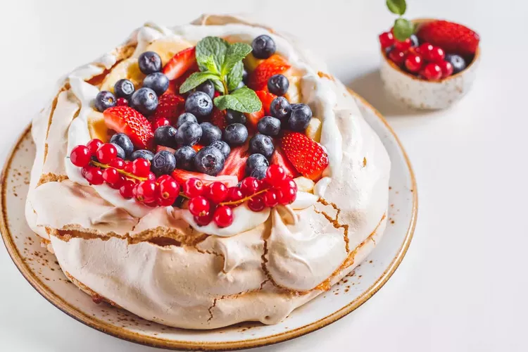
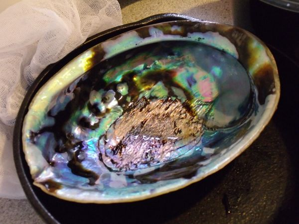
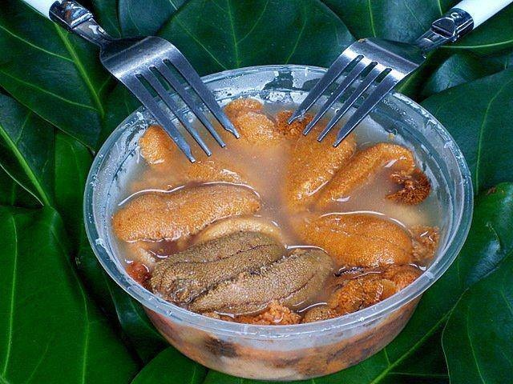
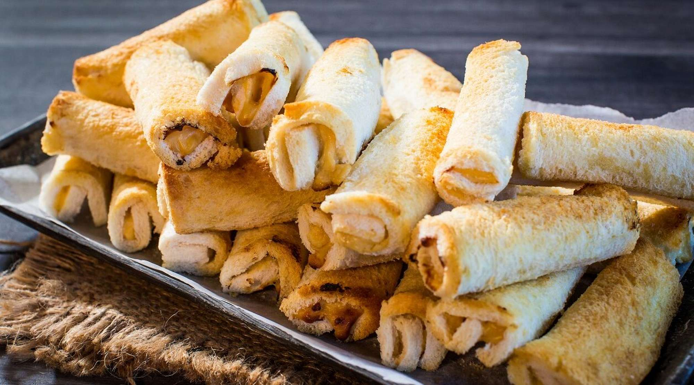
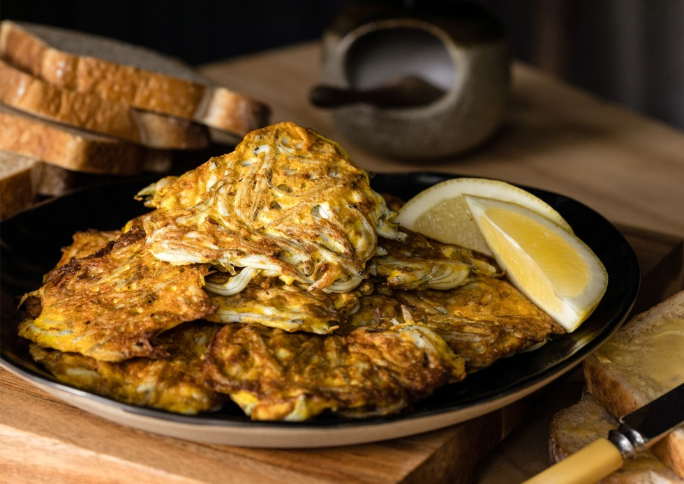

FOODS
PAVLOVA
Pavlova is considered as New Zealand's national food although, New Zealand doesn't have one. Pavlova is a dessert that's made from fresh fruits as well as, whipped cream. Certainly, this food is very recommended to buy and taste for the tourists.
PAUA (Abalone)
Paua is also known as Abalone, it's a snail that's tasty to be considered as delicacy. Paua is often added with spices, flours and eggs to be more delicious. It is indeed delicious to eat if you're here in the New Zealand as well as, it's recommended for the tourists who loves seafoods.
KINA
Kina is a seafood in New Zealand that's need to be eaten raw. It has a bitter unique flavor, so that's why it's an expensive delicacy but it's worth to eat. Kina's also have different recipes like mixing it with eggs, spices, vegetables and many more. It's good to eat beside the shore to take up the mood.
SOUTHLAND CHEESE ROLL
Southland Cheese Roll is look like an ordinary cheese roll but it's not. It is because Southland's Cheese Roll is classified as Southland Sushi. Additionally, It has a various flavors from its spices like: soup mix, pepper mustard and many more. So if the tourists wants sushi, this is recommended for them to eat.
WHITEBAIT
Whitebait is a delicacy in New Zealand that's made up of whole fish including its bones. It's a food that's good to mix with eggs, vegetables, lemon juice, pepper, and flour so that's why it's delicious. It's a good for breakfast for the tourists, who wants to vacate in the New Zealand for serveral weeks.